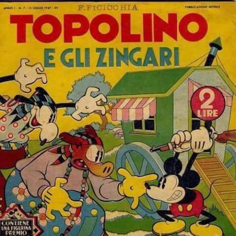

Se è su internet, dev'essere assolutamente vero.
 Abraham Lincoln, 1812
Abraham Lincoln, 1812questo è un buon sito per imparare a programmare in HTML,CSS o PHP
lo so che era un battuta scontata, la davano in saldo al lidl.Hass è solo quello che fò per studiarmi a cazzo di cane html (durante le lezioni costanti divagazioni).
e che 10 in Giapponese si scrive "十" (Jū) ed ha un pronuncia molto simile a Jew?

tiè, beccati quest'altra regola orizzontale (<hr>)
(su pc vedi Alt+1, Alt+2 ed Alt+3)
Suzuka è un ottimo tracciato, mi piace un sacco. Anche se alla fine giro sempre su SPA. DANNATE CORPORAZIONI! ANCHE IL TRACCIATO IN CUI GIRO DI PIÙ È UNA SOCIETÀ PER ANZIANI! AAAAAHHHH Qui c'era una citazione di Mosconi Germano (1932 - 2012), un gran giornalista, molto appassionato al suo lavoro.
Nonostante divenne noto per i suoi fuori onda, vinse il premio Cesare d'Oro al merito giornalistico. Mica cazzi.
<strong>e queste sono parole forti</strong>
L'angolo citazioni della lidlNON SI SCOPA NELL'ANGOLO ROTTURE DELLA LIDL!!
vi è offerto da:
da topolino.
Se è su internet, dev'essere assolutamente vero.
Solo perché puoi dirlo non vuol dire che devi parlare, fottiti tu e la tua libertà di parola! Mao non ha fatto nulla di sbagliato! E neanche Stalin! E neanche Kim Jong-Unun commie malato, che probabilmente non si rende conto che la sua retorica è particolarmente controproducente, 2021 (ma tra un po' nel 1984)
Sito web scritto da Sto cazzocitazioneutente da citare